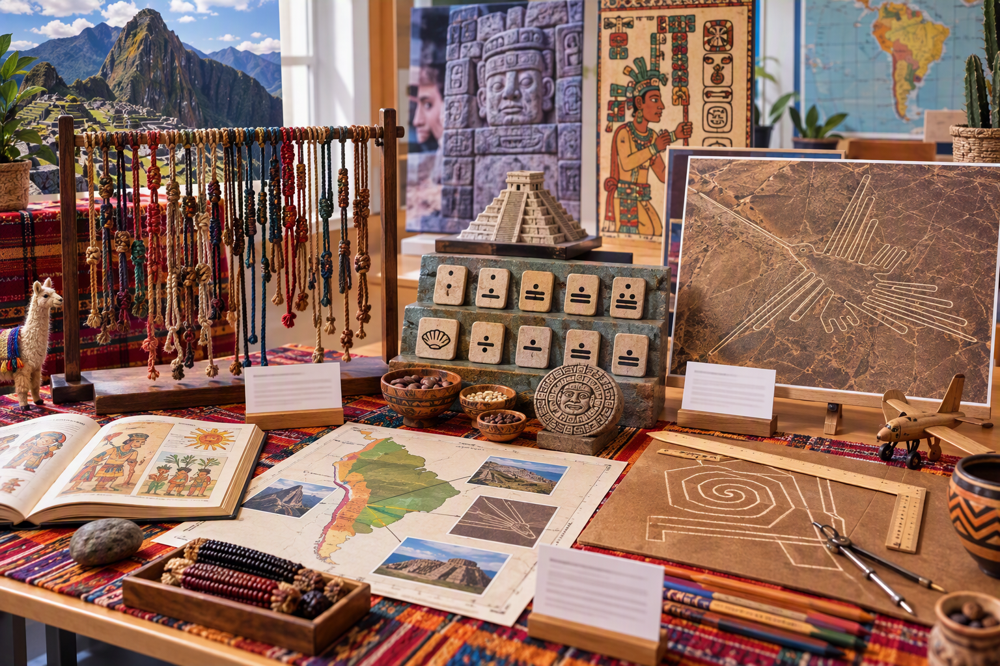

Un parcours spiralaire de la Seconde à la Terminale : observer, modéliser, vérifier, argumenter et communiquer en espagnol.
Introduction et contrat de lecture
Cette page présente une progression DNL mathématiques en espagnol organisée sur trois années de lycée. Elle ne juxtapose pas des thèmes culturels et des notions mathématiques : chaque module part d’un objet, d’une source ou d’une situation, construit une question mathématique, formalise un outil, puis demande aux élèves de communiquer une démarche en espagnol.
Objectif général : construire une progression cohérente qui associe rigueur mathématique, espagnol scientifique et culture humaniste. À chaque étape, l’élève doit pouvoir expliquer ce qu’il observe, quel modèle il utilise, comment il vérifie et comment il formule sa conclusion en espagnol.
Contrat de cohérence : chaque module suit une même chaîne didactique : source culturelle → question mathématique → modèle → vérification → verbalisation en espagnol → trace réutilisable. Cette chaîne rend explicite le lien entre culture, mathématiques et langue.
Question directrice du parcours : comment les mathématiques permettent-elles de lire, représenter, vérifier et communiquer des phénomènes dans des contextes culturels hispaniques variés ?
Le fil conducteur est la représentation de l’information : représenter un nombre, une forme, une variation, une donnée, une probabilité ou un phénomène. Les contextes hispaniques servent à donner du sens aux modèles, à interroger leurs limites et à développer une médiation scientifique accessible.
Répartition horaire des 90 heures
Seconde
30 heures (environ 33,3 %)
Première
30 heures (environ 33,3 %)
Terminale
30 heures (environ 33,3 %)
Choix didactique : chaque année reprend des gestes mathématiques déjà rencontrés — observer, représenter, calculer, conjecturer, démontrer, modéliser — dans des contextes culturels de plus en plus complexes. Cette organisation facilite la mémorisation, le transfert et l’autonomie.
Repères artistiques, patrimoniaux et littéraires du monde hispanique
Arts géométriques précolombiens
Les civilisations précolombiennes offrent des entrées pertinentes pour aborder la numération, les représentations, les symétries, les motifs et les structures. Les quipus, les textiles, les décors céramiques et certains dispositifs architecturaux permettent de construire des activités historiques, mathématiques et linguistiques, tout en évitant de réduire la diversité de ces cultures à une tradition visuelle unique.

Motifs nazca : régularités, symétries et organisation géométrique dans les arts précolombiens.
Patrimoine hispano-musulman et géométrie
Le patrimoine d’Al‑Ándalus constitue un support privilégié pour étudier les transformations du plan, les pavages, les symétries et les proportions. L’Alhambra de Grenade, le Generalife et l’Albaicín permettent d’observer des régularités géométriques variées et de relier l’étude des figures à une lecture historique et artistique.
Mosaïques de l’Alhambra de Grenade : pavages, transformations et symétries.
Gaudí et la géométrie de l’espace
L’œuvre d’Antoni Gaudí constitue un contexte adapté pour étudier les courbes, les surfaces, les structures et la modélisation. Elle permet de faire dialoguer géométrie, fonctions, observation de la nature et lecture architecturale, sans réduire l’architecture à une simple application de formules.
Intérieur de la Sagrada Família : formes, structures, lumière et modélisation.
Littérature, logique et pensée des formes
Les textes de Jorge Luis Borges et d’Octavio Paz permettent de relier littérature, logique, combinatoire, labyrinthe, structure et réflexion sur l’infini. Ils constituent des supports de travail pour travailler l’argumentation, la distinction entre métaphore littéraire et concept mathématique, ainsi que la précision du vocabulaire.
Biblioteca Vasconcelos, Mexico : la répétition des rayonnages et la profondeur de l’espace évoquent le labyrinthe, la combinatoire et l’infini chez Borges.
Art cinétique latino-américain
L’art cinétique latino-américain, notamment avec Jesús Rafael Soto et Carlos Cruz-Diez, ouvre des perspectives sur la couleur, la perception, les régularités, les déplacements et les effets visuels. Il permet d’articuler géométrie, fonctions, regard critique et histoire de l’art contemporain.
Art cinétique latino-américain : perception, couleur, régularité et mouvement.
Vision globale du parcours DNL
Le parcours repose sur une progression spiralaire : les notions sont d’abord découvertes dans des situations accessibles, puis consolidées, formalisées et réinvesties dans des tâches plus complexes. Les mathématiques deviennent ainsi un langage commun pour analyser des documents culturels, construire des raisonnements et présenter des démarches en espagnol.
Parcours complet en trois années
Tableau : Parcours complet en trois années
Niveau
Nombre de modules
Volume horaire
Dominantes culturelles et mathématiques
Seconde
6 modules
30 heures
Cultures précolombiennes, Al‑Ándalus, proportionnalité, statistiques, Gaudí et Borges
Première
6 modules
30 heures
Géométrie 3D, art cinétique, suites, probabilités, fractales et poésie
Terminale
6 modules
30 heures
Modélisation avancée, humanités numériques, statistiques, musique, art conceptuel et réalisme magique
Alignement des apprentissages sur les trois années
Cette synthèse relie, pour chaque niveau, l’activité mathématique dominante, la production en espagnol et la trace attendue. Elle permet de lire rapidement la progression de l’observation guidée vers la modélisation autonome.
Progression des apprentissages, des productions langagières et des traces
Niveau
Priorité d’apprentissage
Activité mathématique dominante
Production en espagnol
Trace attendue
Seconde
Construire les premiers repères et expliciter une procédure.
Observer, représenter, calculer et vérifier.
Nommer, décrire et expliquer une démarche simple.
Schéma annoté, tableau, calcul vérifié et phrase structurée.
Première
Formaliser, comparer des modèles et justifier des choix.
Conjecturer, généraliser, argumenter et démontrer partiellement.
Comparer, justifier et répondre à une objection.
Paragraphe argumenté, modèle commenté ou présentation courte.
Terminale
Modéliser une situation complexe et évaluer les limites du modèle.
Modéliser, interpréter, évaluer et synthétiser.
Médier, reformuler et adapter le discours au public.
Dossier, exposé ou synthèse critique bilingue.
Lecture de la progression : les contenus changent selon les modules, mais trois exigences restent constantes : choisir un modèle adapté, vérifier le résultat et l’expliquer en espagnol avec un vocabulaire précis.
Résumé visuel des modules par couleurs
Cette synthèse donne une lecture rapide de la progression : trois niveaux, dix-huit modules et un cheminement allant de l’observation guidée à la modélisation autonome.
🎨Module 8 — Fonctions du second degré et art cinétique latino-américain
Modéliser des trajectoires paraboliques à l’aide de fonctions du second degré, puis analyser séparément des régularités et des effets visuels dans l’art cinétique latino-américain.
Étudier la suite de Fibonacci, ses modes de construction et certaines représentations en spirale, sans confondre la spirale de Fibonacci avec les formes naturelles observées.
🧩Module 11 — Géométrie avancée, itérations et créations fractales en contexte latino-américain
Étudier des formes complexes et des processus itératifs à partir de créations visuelles ou numériques clairement situées dans des contextes latino-américains.
Discours adapté au public avec reformulation et nuance.
🎉Module transversal — Fêtes et traditions hispaniques
Explorer les mathématiques présentes dans les grandes célébrations du monde hispanique grâce à un parcours culturel associant mémoire, géométrie, proportionnalité, calendriers et modélisation.
Parcours complet : ce module propose une progression culturelle et mathématique autour du Jour des morts, de Noël, des Rois Mages, de la Semaine Sainte et de Pâques. Ce parcours transversal complète les 18 modules numérotés sans modifier le volume principal de 90 heures.
🎵Module transversal — Musique et mathématiques hispaniques
Explorer les mathématiques dans la musique hispanique dans un parcours progressif qui articule rythme, proportions, fonctions, analyse de signaux et création sonore.
Parcours complet : ce module relie pratiques musicales, modélisation mathématique et patrimoine culturel hispanique de la Seconde à la Terminale. Ce parcours transversal complète les 18 modules numérotés sans modifier le volume principal de 90 heures.
Cette page s’adresse aux élèves de Seconde, Première et Terminale suivant une DNL mathématiques en espagnol, aux familles qui souhaitent comprendre l’organisation du parcours, ainsi qu’aux enseignants recherchant une progression interdisciplinaire associant mathématiques, espagnol scientifique et culture hispanique.
Questions fréquentes sur la DNL mathématiques en espagnol
Qu’est-ce que la DNL mathématiques en espagnol ?
La DNL mathématiques en espagnol consiste à travailler des notions mathématiques en mobilisant progressivement l’espagnol dans des situations scientifiques, culturelles et argumentatives.
Quels niveaux sont concernés ?
La progression couvre trois années de lycée : la Seconde, la Première et la Terminale, avec six modules par niveau.
Quels thèmes culturels sont abordés ?
Le parcours aborde notamment les civilisations précolombiennes, Al‑Ándalus, l’architecture de Gaudí, la littérature de Borges, l’art cinétique latino-américain, la musique et les fêtes hispaniques.
Quelles compétences mathématiques sont travaillées ?
Les élèves travaillent la numération, la proportionnalité, les statistiques, la géométrie, les fonctions, les suites, les probabilités, la modélisation et la communication mathématique en espagnol.